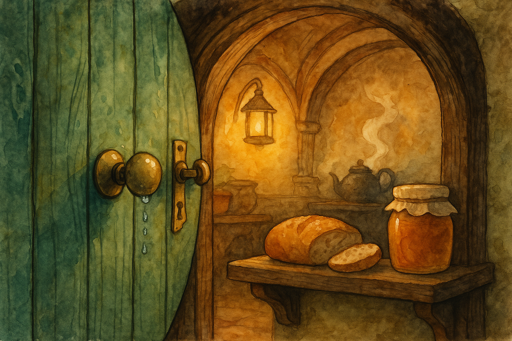

I went to the pantry before the kettle had finished its little complaint-song, and found the latch cool under my thumb, beaded with dew. A hobbit notices such things when spring is being polite — the sort of clean, bright morning that makes even chores feel like good manners. There was yesterday’s loaf, a jar of honey, and a bit of butter that looked as if it had been expecting me.
On the Road one learns to think in big distances and larger dangers, but at home the day asks for smaller courage: tidy the shelf, set the cup, slice the bread straight. I used to imagine adventures arrived with trumpets. Often they begin with something much quieter — a decision to do the next right little thing, while the world is still waking.
Gandalf once gave me plenty of notions that would not sit still in an armchair, and I have been in more corners of Middle Earth than I ever meant to. Still, I find it a comfort to remember: “If you never do anything unexpected, you won’t find anything.” So I buttered my bread, opened the round door to let the morning in, and promised myself one unexpected kindness — even if it was only to take the long way down the Hill.
Filed under: Middle Earth • Written at Bag End